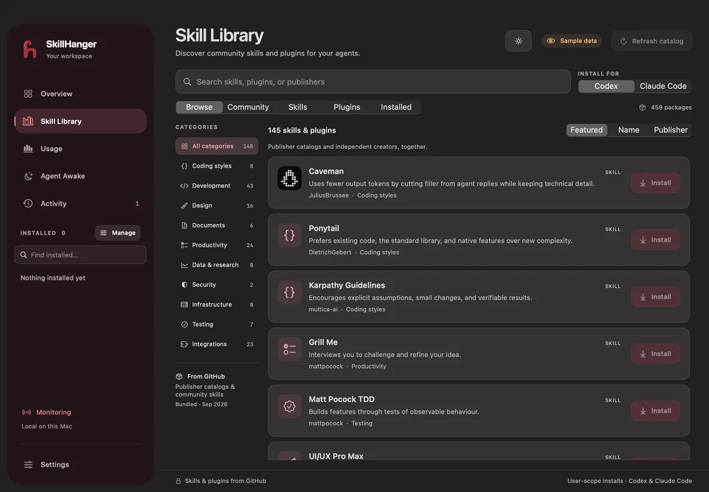
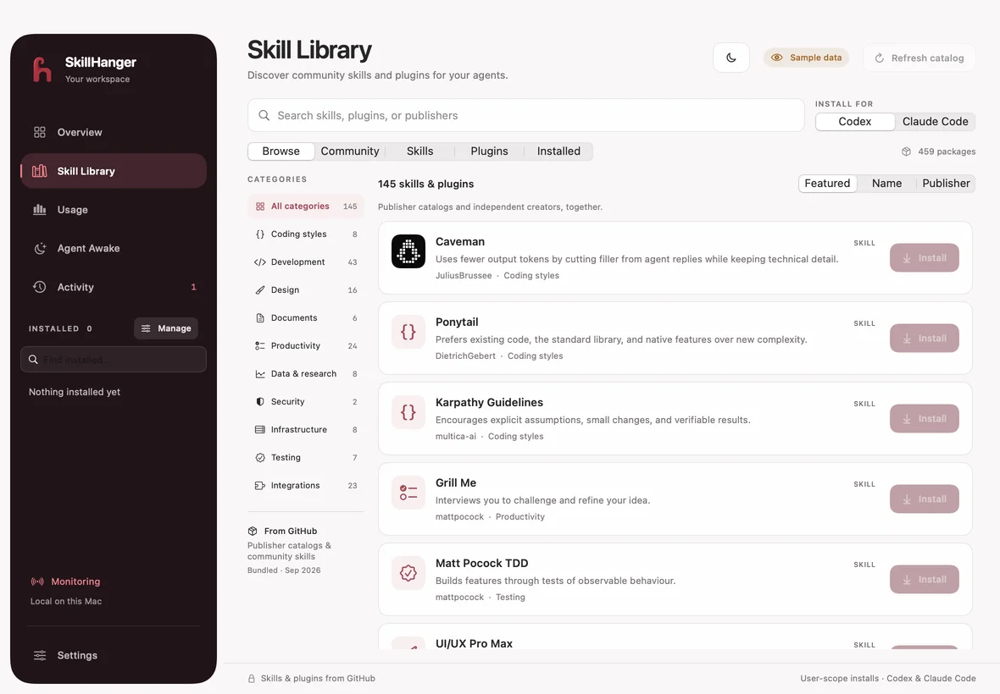
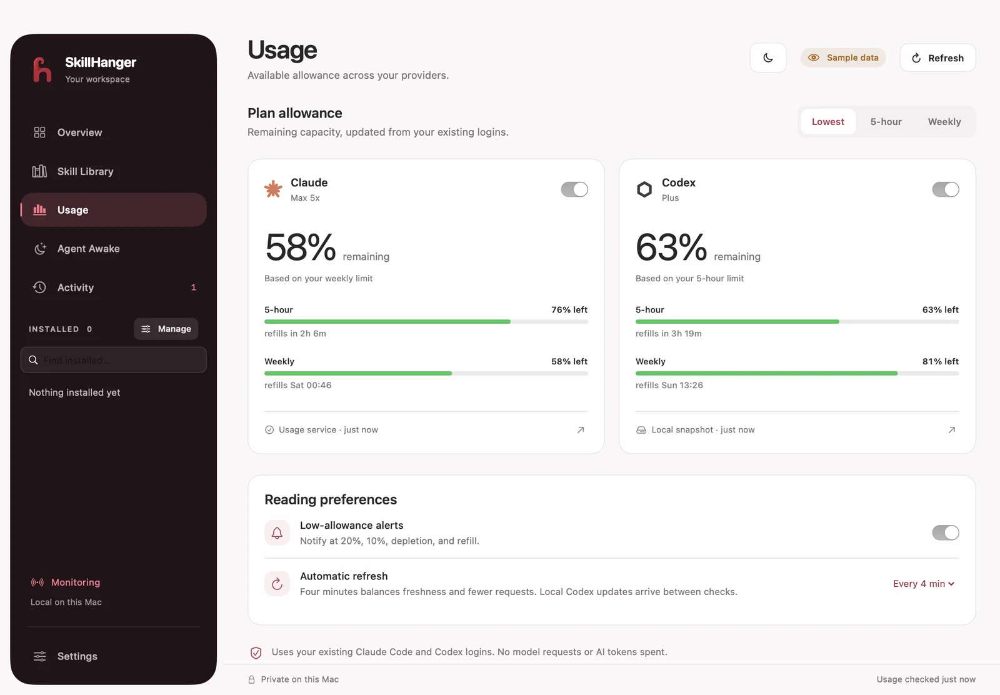
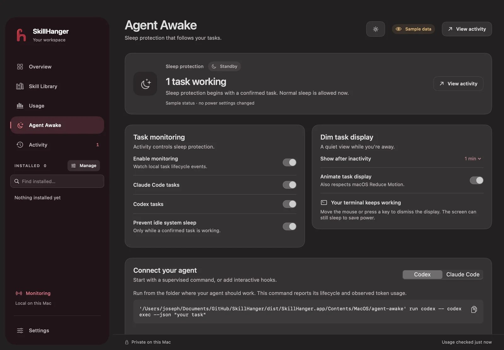

Problem
Tools scattered everywhere
AI coding workflows span package folders, usage pages, terminal sessions, and power settings. I built one native workspace to make those pieces easier to find and manage.


Swift macOS App · Joseph Doyle-Samadi
A free, open-source Mac app for people who work with Codex and Claude Code. Find skills and plugins, see your remaining allowance, and follow the tasks that keep your Mac working.
Problem
AI coding workflows span package folders, usage pages, terminal sessions, and power settings. I built one native workspace to make those pieces easier to find and manage.
Skill Library
Search GitHub skills and plugins by assistant, category, or publisher. Review a package's source, install it for Codex or Claude Code, and manage supported settings from the installed library.
UsageBar
Session and weekly limits, reset times, and reading freshness live in the dashboard, menu bar, and floating battery widgets. Provider checks combine with local Codex log updates, with explicit stale and error states.
Agent Awake
Provider hooks and a command-line helper report working, waiting, finished, and interrupted tasks. Optional IOKit idle-sleep protection follows monitored work and releases when work stops. Monitoring requires task events or a supervised command.
Engineering
SwiftUI and AppKit power the dashboard, menu-bar popup, and floating widgets. Separate Swift modules handle usage reads, task records, command supervision, and power assertions, with no third-party runtime dependencies.
Reliability
Regression tests cover package installation, monitoring leases, usage parsing, rate-limit handling, preferences, and window layouts. An isolated preview mode renders sample data without reading live usage or activating power assertions.

